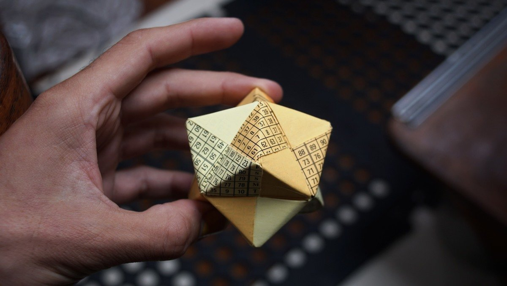
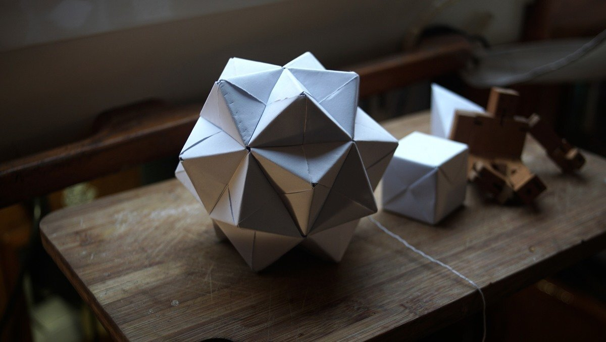
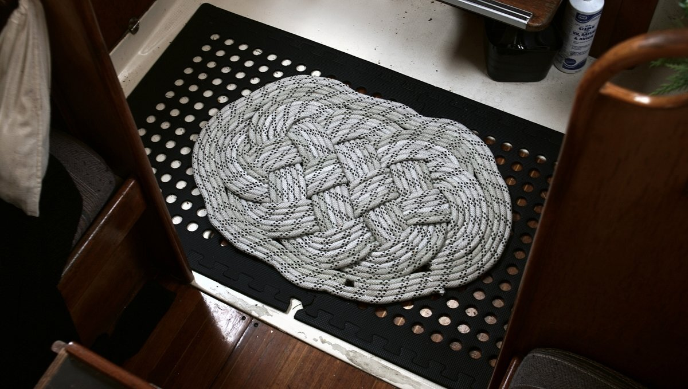

decorations
Projects that add warmth to the boat and that help to pass the time on cloudy, or rainy days when we don't have enough power to use our computers.
Origami. We like to use paper from old installation manuals from devices we no longer have, or pages from expired tide tables to make origami. We enjoy making sonobe, a unit that has the shape of a parallelogram with 45 and 135 degrees angles, divided by creases into two diagonal tabs at the ends and two corresponding pockets within the inscribed center square. The system can build a wide range of three-dimensional geometric forms by docking these tabs into the pockets of adjacent units. See tutorial.
Below is a more complex version of a sonobe-based structure.
We also like to make other shapes, like this star.

Rope projects. Another way to pass time is to re-use old lines and halyards to make rugs, monkey fists, mats or other decorations.
The mat below was made from our old main halyard, the one we crossed most of the Pacific ocean with. We replaced it while in Japan, and turned it into a rug! Making the basic starting pattern is easy enough, but it's important to be attentive to not overlap the ropes the wrong way. The longest part of the project is to pick up the slack in the end, to form a uniform mat.

See our tutorial to find out how to make a rope rug.
Every year, we also like to carve some halloween pumpkins.